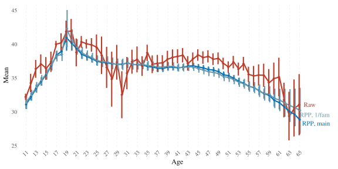
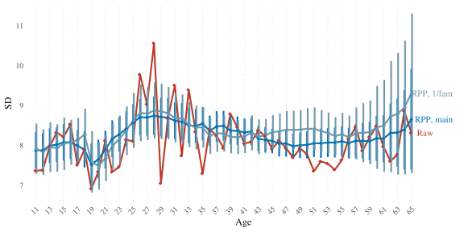
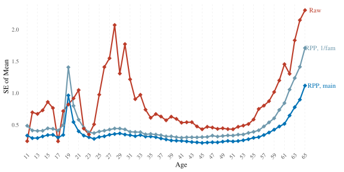

Additional analyses
2025-03-13
knitr::opts_chunk$set(
message = FALSE,
warning = TRUE,
include = TRUE,
error = TRUE,
fig.width = 8,
fig.height = 4
)
library(tidyverse)
library(haven)
library(ggrepel)
library(brms)
library(tidybayes)
library(rstan)
options(mc.cores = 4,
brms.backend = "cmdstanr")
options(scipen = 999,
digits = 4)
# windowsFonts(Times = windowsFont("Times New Roman"))
theme_set(theme_minimal(base_size = 12, base_family = "Times"))
load("../unshareable_data/preprocessed/tl.Rda")
load("data/preprocessed/de_census/census.Rda")
source("age_norm_comparisons.R")1 Model predictions without poststratification
In order to clearly see the contribution of poststratification as opposed to only making predictions based on the regression model (as is done in continuous norming and similar approaches for example), here we compare raw and RPP means to predictions from the regularised prediction model without poststratification (RP). We did this using a function at an earlier stage of the project to facilitate comparing several models:
1.1 Fit/load the prediction model
brm_MAIN_skew_s_by_educ_mig_male_int <-
brm(bf(
cft ~ (1 | mig) + male + (1 | mig:male) + s(age, by = educ),
sigma ~ (1 | mig) + (1 | educ) + male + s(age),
alpha ~ (1 | mig) + (1 | educ) + male + s(age)
),
family = "skew_normal",
chains = 4,
seed = 810,
file = "../unshareable_data/brms/cft/brm_MAIN_skew_s_by_educ_mig_male_int",
data = tl) %>%
add_criterion("loo")1.2 Compare
RPP_vs_raw_vs_RP <- age_norm_comparisons(
brm_MAIN_skew_s_by_educ_mig_male_int,
ps_table = census,
RP = c("census", "norming_sample"),
ps_variables = c("age", "educ", "mig", "male"),
re_formula = NULL,
sim_size = 100000,
labels = c( "Raw", "RPP", "RP"),
palette = c(
"#BC3C29FF",
"#0072B5FF",
"#E18727FF"
),
output_file = "data/results/RPP_vs_raw_vs_RP.rds"
)
ggsave("figures/S10_RPP_vs_raw_vs_RP.png", RPP_vs_raw_vs_RP$means_plot, width = 8, height = 4)
RPP_vs_raw_vs_RP[-1]## $overall_estimates
## # A tibble: 2 × 5
## Mean SE_of_Mean SD SE_of_SD Model
## <dbl> <dbl> <dbl> <dbl> <chr>
## 1 35.8 0.118 8.63 0.102 RPP_brm_MAIN_skew_s_by_educ_mig_male_int
## 2 37.4 0.0720 8.23 0.0619 RP_brm_MAIN_skew_s_by_educ_mig_male_int
##
## $means_plot
##
## $SDs_plot## Warning: Removed 55 rows containing missing values or values outside the scale range
## (`geom_segment()`).
##
## $SEs_plot
Besides the obvious effect that poststratification has on means, it also smoothes SD estimates and considerably reduces SEs of both means and SDs.
2 One person per family
Since the TwinLife sample is composed of families, one could argue that the dependence among estimates of family members violates the i.i.d assumption and leads to underestimation of variance. To check the robustness of our results against this violation, we ran the same RPP but with only one person chosen randomly out of each family, thus eliminating the dependency.
2.1 Fit/load the prediction model
set.seed(14)
tl_1_per_fid <- tl %>%
group_by(fid) %>%
sample_n(1)
brm_skew_s_by_educ_mig_male_int_1_per_fid <-
brm(bf(
cft ~ (1 | mig) + male + (1 | mig:male) + s(age, by = educ),
sigma ~ (1 | mig) + (1 | educ) + male + s(age),
alpha ~ (1 | mig) + (1 | educ) + male + s(age)
),
family = "skew_normal",
chains = 4,
seed = 810,
file = "../unshareable_data/brms/cft/brm_skew_s_by_educ_mig_male_int_1_per_fid",
data = tl_1_per_fid) %>%
add_criterion("loo")
brm_skew_s_by_educ_mig_male_int_1_per_fid## Warning: There were 42 divergent transitions after warmup. Increasing
## adapt_delta above 0.8 may help. See
## http://mc-stan.org/misc/warnings.html#divergent-transitions-after-warmup## Family: skew_normal
## Links: mu = identity; sigma = log; alpha = identity
## Formula: cft ~ (1 | mig) + male + (1 | mig:male) + s(age, by = educ)
## sigma ~ (1 | mig) + (1 | educ) + male + s(age)
## alpha ~ (1 | mig) + (1 | educ) + male + s(age)
## Data: tl_1_per_fid (Number of observations: 4046)
## Draws: 4 chains, each with iter = 2000; warmup = 1000; thin = 1;
## total post-warmup draws = 4000
##
## Smoothing Spline Hyperparameters:
## Estimate Est.Error l-95% CI
## sds(sageeducISCED3b:Uppersecondaryvocational_1) 21.87 8.29 9.59
## sds(sageeducISCED1:Primary_1) 108.42 38.48 49.33
## sds(sageeducISCED2:Lowersecondary_1) 54.63 22.55 25.93
## sds(sageeducISCED3a:Uppersecondarygeneral_1) 14.80 10.37 1.00
## sds(sageeducISCED4:PostMsecondary_1) 12.29 7.53 2.21
## sds(sageeducISCED5a:Tertiarye.g.college_1) 21.12 7.91 9.24
## sds(sageeducISCED5b:Tertiarye.g.coMopprogram_1) 8.97 5.46 1.70
## sds(sageeducISCED6:PhD_1) 12.59 6.58 4.26
## sds(sageeducST1:Primary_1) 10.41 12.47 0.33
## sds(sageeducST2:Lowersecondary_1) 8.60 8.32 0.27
## sds(sageeducST3:Intermediatesecondary_1) 25.94 16.92 8.83
## sds(sageeducST4:Uppersecondary_1) 23.59 9.95 11.04
## sds(sageeducST5:Comprehensiveschool_1) 26.12 14.01 10.55
## sds(sageeducST6:Otherschool_1) 23.71 12.18 9.09
## sds(sageeducST7:Nolongeratschool_1) 9.54 10.43 0.24
## sds(sigma_sage_1) 0.17 0.22 0.00
## sds(alpha_sage_1) 4.66 3.77 0.24
## u-95% CI Rhat Bulk_ESS Tail_ESS
## sds(sageeducISCED3b:Uppersecondaryvocational_1) 41.52 1.00 1330 2085
## sds(sageeducISCED1:Primary_1) 200.49 1.00 1625 2032
## sds(sageeducISCED2:Lowersecondary_1) 112.32 1.00 1219 2221
## sds(sageeducISCED3a:Uppersecondarygeneral_1) 41.17 1.01 881 1505
## sds(sageeducISCED4:PostMsecondary_1) 30.93 1.00 1191 1536
## sds(sageeducISCED5a:Tertiarye.g.college_1) 40.13 1.00 1158 1958
## sds(sageeducISCED5b:Tertiarye.g.coMopprogram_1) 22.23 1.00 1298 1801
## sds(sageeducISCED6:PhD_1) 29.66 1.00 2640 2342
## sds(sageeducST1:Primary_1) 40.78 1.00 3838 2130
## sds(sageeducST2:Lowersecondary_1) 30.16 1.00 2576 2283
## sds(sageeducST3:Intermediatesecondary_1) 69.06 1.00 2578 2129
## sds(sageeducST4:Uppersecondary_1) 49.46 1.00 3990 2463
## sds(sageeducST5:Comprehensiveschool_1) 61.74 1.00 3173 2753
## sds(sageeducST6:Otherschool_1) 54.95 1.00 3314 2237
## sds(sageeducST7:Nolongeratschool_1) 37.29 1.00 2673 1457
## sds(sigma_sage_1) 0.78 1.00 1580 1919
## sds(alpha_sage_1) 14.09 1.00 1657 2464
##
## Multilevel Hyperparameters:
## ~mig (Number of levels: 6)
## Estimate Est.Error l-95% CI u-95% CI Rhat Bulk_ESS Tail_ESS
## sd(Intercept) 2.31 1.11 0.78 5.25 1.00 1289 1171
## sd(sigma_Intercept) 0.10 0.07 0.03 0.24 1.00 1873 2367
## sd(alpha_Intercept) 1.72 1.07 0.42 4.34 1.00 1666 2476
##
## ~mig:male (Number of levels: 12)
## Estimate Est.Error l-95% CI u-95% CI Rhat Bulk_ESS Tail_ESS
## sd(Intercept) 0.60 0.55 0.02 2.03 1.00 1089 1267
##
## ~educ (Number of levels: 15)
## Estimate Est.Error l-95% CI u-95% CI Rhat Bulk_ESS Tail_ESS
## sd(sigma_Intercept) 0.12 0.03 0.07 0.19 1.00 2006 2751
## sd(alpha_Intercept) 1.95 0.60 1.05 3.33 1.00 1981 2805
##
## Regression Coefficients:
## Estimate Est.Error l-95% CI
## Intercept 36.39 1.27 33.92
## sigma_Intercept 2.00 0.07 1.88
## alpha_Intercept -1.45 1.04 -3.46
## maleTRUE 1.75 0.56 0.80
## sigma_maleTRUE -0.01 0.02 -0.05
## alpha_maleTRUE -0.19 0.44 -1.03
## sage:educISCED3b:Uppersecondaryvocational_1 -115.28 40.42 -202.71
## sage:educISCED1:Primary_1 -376.37 209.73 -835.29
## sage:educISCED2:Lowersecondary_1 -239.46 97.60 -460.42
## sage:educISCED3a:Uppersecondarygeneral_1 9.96 36.90 -43.81
## sage:educISCED4:PostMsecondary_1 -0.18 29.97 -51.12
## sage:educISCED5a:Tertiarye.g.college_1 55.58 35.46 -3.82
## sage:educISCED5b:Tertiarye.g.coMopprogram_1 -38.85 27.89 -105.93
## sage:educISCED6:PhD_1 20.54 30.86 -38.90
## sage:educST1:Primary_1 27.37 37.73 -40.23
## sage:educST2:Lowersecondary_1 44.23 31.31 -15.29
## sage:educST3:Intermediatesecondary_1 45.63 71.15 -97.53
## sage:educST4:Uppersecondary_1 21.97 59.66 -97.12
## sage:educST5:Comprehensiveschool_1 31.60 72.63 -125.76
## sage:educST6:Otherschool_1 39.73 64.03 -93.07
## sage:educST7:Nolongeratschool_1 15.03 38.89 -62.76
## sigma_sage_1 -0.01 0.41 -0.80
## alpha_sage_1 -3.00 9.34 -25.21
## u-95% CI Rhat Bulk_ESS Tail_ESS
## Intercept 38.87 1.00 1495 1926
## sigma_Intercept 2.13 1.00 2193 2322
## alpha_Intercept 0.71 1.00 2477 2521
## maleTRUE 3.07 1.00 2771 1582
## sigma_maleTRUE 0.04 1.00 5967 2942
## alpha_maleTRUE 0.71 1.00 5272 2680
## sage:educISCED3b:Uppersecondaryvocational_1 -43.58 1.00 1093 1804
## sage:educISCED1:Primary_1 -2.19 1.00 2523 1759
## sage:educISCED2:Lowersecondary_1 -73.74 1.00 1335 1516
## sage:educISCED3a:Uppersecondarygeneral_1 102.06 1.00 1467 1819
## sage:educISCED4:PostMsecondary_1 70.01 1.00 1682 2177
## sage:educISCED5a:Tertiarye.g.college_1 132.82 1.00 1246 1985
## sage:educISCED5b:Tertiarye.g.coMopprogram_1 -0.21 1.00 1145 1945
## sage:educISCED6:PhD_1 83.59 1.00 2937 2336
## sage:educST1:Primary_1 114.07 1.00 3173 2012
## sage:educST2:Lowersecondary_1 112.21 1.00 2220 1678
## sage:educST3:Intermediatesecondary_1 201.01 1.00 2396 1968
## sage:educST4:Uppersecondary_1 151.27 1.00 2547 2015
## sage:educST5:Comprehensiveschool_1 171.44 1.00 3014 2272
## sage:educST6:Otherschool_1 172.37 1.00 3123 2163
## sage:educST7:Nolongeratschool_1 97.13 1.00 1714 1542
## sigma_sage_1 0.90 1.00 2399 1453
## alpha_sage_1 13.71 1.00 2750 2718
##
## Draws were sampled using sample(hmc). For each parameter, Bulk_ESS
## and Tail_ESS are effective sample size measures, and Rhat is the potential
## scale reduction factor on split chains (at convergence, Rhat = 1).2.2 Compare
main_vs_1_per_fam <- age_norm_comparisons(
brm_MAIN_skew_s_by_educ_mig_male_int, brm_skew_s_by_educ_mig_male_int_1_per_fid,
ps_table = census,
# RP = c("census", "norming_sample"),
ps_variables = c("age", "educ", "mig", "male"),
re_formula = NULL,
sim_size = 100000,
labels = c( "Raw", "RPP, main", "RPP, 1/fam"),
palette = c(
"#BC3C29FF",
"#0072B5FF",
"#6F99ADFF"
),
output_file = "data/results/main_vs_1_per_fam.rds"
)
ggsave( "figures/S07_main_vs_1_per_fam.png", main_vs_1_per_fam$means_plot, width = 8, height = 4)
main_vs_1_per_fam[-1]## $overall_estimates
## # A tibble: 2 × 5
## Mean SE_of_Mean SD SE_of_SD Model
## <dbl> <dbl> <dbl> <dbl> <chr>
## 1 35.8 0.116 8.62 0.0994 RPP_brm_MAIN_skew_s_by_educ_mig_male_int
## 2 35.9 0.182 8.73 0.160 RPP_brm_skew_s_by_educ_mig_male_int_1_per_fid
##
## $means_plot
##
## $SDs_plot## Warning: Removed 55 rows containing missing values or values outside the scale range
## (`geom_segment()`).
##
## $SEs_plot
3 Excluding participants with ambivalent educational attainment category
Some participants were assigned an education category that combines two degrees with variable ISCED levels: “university of applied sciences, university of cooperative education”. While a degree from a university of applied sciences (Fachhochschule) would put one in ISCED level 5a, a degree from a university of cooperative education (Berufsakademie) is equivalent to ISCED level 5b. TwinLife assigns all people who have this ambivalent category to ISCED 5a. Here we test the robustness of our results against excluding those 357 participants.
3.1 Fit/load the prediction model
tl_no_berufsakad_with_fachhochschule <- tl %>%
filter(!(eca0108 == "level 5a" & eca0230 == 8))
brm_skew_s_by_educ_mig_male_int_no_berufsakad_with_fachhochschule <-
brm(bf(
cft ~ (1 | mig) + male + (1 | mig:male) + s(age, by = educ),
sigma ~ (1 | mig) + (1 | educ) + male + s(age),
alpha ~ (1 | mig) + (1 | educ) + male + s(age)
),
family = "skew_normal",
chains = 4,
seed = 810,
file = "../unshareable_data/brms/cft/brm_skew_s_by_educ_mig_male_int_no_berufsakad_with_fachhochschule",
data = tl_no_berufsakad_with_fachhochschule) %>%
add_criterion("loo")
brm_skew_s_by_educ_mig_male_int_no_berufsakad_with_fachhochschule## Warning: There were 40 divergent transitions after warmup. Increasing
## adapt_delta above 0.8 may help. See
## http://mc-stan.org/misc/warnings.html#divergent-transitions-after-warmup## Family: skew_normal
## Links: mu = identity; sigma = log; alpha = identity
## Formula: cft ~ (1 | mig) + male + (1 | mig:male) + s(age, by = educ)
## sigma ~ (1 | mig) + (1 | educ) + male + s(age)
## alpha ~ (1 | mig) + (1 | educ) + male + s(age)
## Data: tl_no_berufsakad_with_fachhochschule (Number of observations: 9630)
## Draws: 4 chains, each with iter = 2000; warmup = 1000; thin = 1;
## total post-warmup draws = 4000
##
## Smoothing Spline Hyperparameters:
## Estimate Est.Error l-95% CI
## sds(sageeducISCED3b:Uppersecondaryvocational_1) 24.84 8.78 11.97
## sds(sageeducISCED1:Primary_1) 88.23 28.86 46.17
## sds(sageeducISCED2:Lowersecondary_1) 61.44 22.41 29.84
## sds(sageeducISCED3a:Uppersecondarygeneral_1) 17.94 9.72 2.81
## sds(sageeducISCED4:PostMsecondary_1) 9.42 4.80 2.97
## sds(sageeducISCED5a:Tertiarye.g.college_1) 20.86 6.89 10.75
## sds(sageeducISCED5b:Tertiarye.g.coMopprogram_1) 11.16 5.33 4.09
## sds(sageeducISCED6:PhD_1) 13.28 6.07 5.81
## sds(sageeducST1:Primary_1) 11.15 13.01 0.30
## sds(sageeducST2:Lowersecondary_1) 12.12 9.87 0.57
## sds(sageeducST3:Intermediatesecondary_1) 25.58 15.70 9.87
## sds(sageeducST4:Uppersecondary_1) 27.13 11.14 13.03
## sds(sageeducST5:Comprehensiveschool_1) 29.02 17.84 11.79
## sds(sageeducST6:Otherschool_1) 24.94 13.31 10.43
## sds(sageeducST7:Nolongeratschool_1) 14.09 15.53 0.37
## sds(sigma_sage_1) 0.11 0.12 0.00
## sds(alpha_sage_1) 5.74 2.81 1.66
## u-95% CI Rhat Bulk_ESS Tail_ESS
## sds(sageeducISCED3b:Uppersecondaryvocational_1) 46.09 1.00 691 1285
## sds(sageeducISCED1:Primary_1) 157.80 1.00 1223 2411
## sds(sageeducISCED2:Lowersecondary_1) 114.63 1.01 784 1559
## sds(sageeducISCED3a:Uppersecondarygeneral_1) 40.99 1.00 782 1100
## sds(sageeducISCED4:PostMsecondary_1) 21.44 1.00 1208 2594
## sds(sageeducISCED5a:Tertiarye.g.college_1) 37.30 1.00 982 1544
## sds(sageeducISCED5b:Tertiarye.g.coMopprogram_1) 23.82 1.00 959 2089
## sds(sageeducISCED6:PhD_1) 28.24 1.00 2194 1930
## sds(sageeducST1:Primary_1) 48.84 1.00 2090 1857
## sds(sageeducST2:Lowersecondary_1) 38.16 1.00 1822 1879
## sds(sageeducST3:Intermediatesecondary_1) 67.96 1.00 1959 1949
## sds(sageeducST4:Uppersecondary_1) 55.81 1.00 2425 1768
## sds(sageeducST5:Comprehensiveschool_1) 77.44 1.00 1709 1373
## sds(sageeducST6:Otherschool_1) 60.91 1.00 2583 2333
## sds(sageeducST7:Nolongeratschool_1) 55.78 1.00 1875 1532
## sds(sigma_sage_1) 0.42 1.00 1527 1855
## sds(alpha_sage_1) 12.73 1.00 1493 1848
##
## Multilevel Hyperparameters:
## ~mig (Number of levels: 6)
## Estimate Est.Error l-95% CI u-95% CI Rhat Bulk_ESS Tail_ESS
## sd(Intercept) 2.74 1.25 1.32 6.01 1.00 1397 2152
## sd(sigma_Intercept) 0.09 0.05 0.04 0.23 1.00 1412 1926
## sd(alpha_Intercept) 1.06 0.61 0.35 2.62 1.00 1312 1982
##
## ~mig:male (Number of levels: 12)
## Estimate Est.Error l-95% CI u-95% CI Rhat Bulk_ESS Tail_ESS
## sd(Intercept) 0.31 0.31 0.01 1.09 1.01 1059 1687
##
## ~educ (Number of levels: 15)
## Estimate Est.Error l-95% CI u-95% CI Rhat Bulk_ESS Tail_ESS
## sd(sigma_Intercept) 0.10 0.02 0.06 0.16 1.00 1150 1930
## sd(alpha_Intercept) 1.42 0.46 0.74 2.46 1.00 1295 2446
##
## Regression Coefficients:
## Estimate Est.Error l-95% CI
## Intercept 36.96 1.36 34.23
## sigma_Intercept 1.99 0.05 1.88
## alpha_Intercept -1.79 0.67 -3.07
## maleTRUE 1.40 0.32 0.81
## sigma_maleTRUE 0.02 0.02 -0.01
## alpha_maleTRUE -0.18 0.24 -0.66
## sage:educISCED3b:Uppersecondaryvocational_1 -139.66 40.49 -229.16
## sage:educISCED1:Primary_1 -392.17 120.68 -651.43
## sage:educISCED2:Lowersecondary_1 -335.20 99.05 -548.23
## sage:educISCED3a:Uppersecondarygeneral_1 17.88 40.12 -45.88
## sage:educISCED4:PostMsecondary_1 -8.19 23.20 -51.73
## sage:educISCED5a:Tertiarye.g.college_1 41.18 31.54 -14.85
## sage:educISCED5b:Tertiarye.g.coMopprogram_1 -52.19 26.56 -112.85
## sage:educISCED6:PhD_1 24.49 30.89 -34.29
## sage:educST1:Primary_1 33.99 38.21 -41.75
## sage:educST2:Lowersecondary_1 54.61 36.94 -16.24
## sage:educST3:Intermediatesecondary_1 58.24 74.66 -73.59
## sage:educST4:Uppersecondary_1 38.24 68.22 -96.55
## sage:educST5:Comprehensiveschool_1 32.34 83.72 -152.88
## sage:educST6:Otherschool_1 43.49 68.08 -98.41
## sage:educST7:Nolongeratschool_1 24.07 61.03 -68.82
## sigma_sage_1 -0.03 0.28 -0.58
## alpha_sage_1 -8.18 8.84 -27.41
## u-95% CI Rhat Bulk_ESS Tail_ESS
## Intercept 39.57 1.00 1008 1580
## sigma_Intercept 2.10 1.00 1046 1519
## alpha_Intercept -0.41 1.00 1492 1882
## maleTRUE 2.12 1.00 2021 1621
## sigma_maleTRUE 0.05 1.00 4350 1686
## alpha_maleTRUE 0.30 1.00 4363 2423
## sage:educISCED3b:Uppersecondaryvocational_1 -67.39 1.00 643 1567
## sage:educISCED1:Primary_1 -182.13 1.00 1501 1944
## sage:educISCED2:Lowersecondary_1 -163.25 1.00 666 1341
## sage:educISCED3a:Uppersecondarygeneral_1 111.40 1.00 884 1156
## sage:educISCED4:PostMsecondary_1 43.55 1.00 963 1083
## sage:educISCED5a:Tertiarye.g.college_1 107.49 1.00 734 1102
## sage:educISCED5b:Tertiarye.g.coMopprogram_1 -8.90 1.01 719 1370
## sage:educISCED6:PhD_1 86.21 1.00 1544 1603
## sage:educST1:Primary_1 119.15 1.00 1497 1028
## sage:educST2:Lowersecondary_1 133.21 1.00 1652 1797
## sage:educST3:Intermediatesecondary_1 234.14 1.00 1742 1397
## sage:educST4:Uppersecondary_1 178.35 1.00 1569 1562
## sage:educST5:Comprehensiveschool_1 185.85 1.00 1429 1162
## sage:educST6:Otherschool_1 179.73 1.00 1832 1792
## sage:educST7:Nolongeratschool_1 151.22 1.00 1490 1243
## sigma_sage_1 0.61 1.00 1690 1674
## alpha_sage_1 7.57 1.00 1887 2566
##
## Draws were sampled using sample(hmc). For each parameter, Bulk_ESS
## and Tail_ESS are effective sample size measures, and Rhat is the potential
## scale reduction factor on split chains (at convergence, Rhat = 1).3.2 Compare
main_vs_mod_isced <- age_norm_comparisons(
brm_MAIN_skew_s_by_educ_mig_male_int, brm_skew_s_by_educ_mig_male_int_no_berufsakad_with_fachhochschule,
ps_table = census,
# RP = c("census", "norming_sample"),
ps_variables = c("age", "educ", "mig", "male"),
re_formula = NULL,
sim_size = 100000,
labels = c( "Raw", "RPP, main", "RPP, no BeAk/FHS"),
palette = c(
"#BC3C29FF",
"#0072B5FF",
"#6F99ADFF"
),
output_file = "data/results/main_vs_mod_isced.rds"
)
ggsave( "figures/S08_main_vs_mod_isced.png", main_vs_mod_isced$means_plot, width = 8, height = 4)
main_vs_mod_isced[-1]## $overall_estimates
## # A tibble: 2 × 5
## Mean SE_of_Mean SD SE_of_SD Model
## <dbl> <dbl> <dbl> <dbl> <chr>
## 1 35.8 0.118 8.61 0.0999 RPP_brm_MAIN_skew_s_by_educ_mig_male_int
## 2 35.8 0.115 8.62 0.103 RPP_brm_skew_s_by_educ_mig_male_int_no_berufs…
##
## $means_plot
##
## $SDs_plot## Warning: Removed 55 rows containing missing values or values outside the scale range
## (`geom_segment()`).
##
## $SEs_plot
4 Excluding participants with missing migration background information
4.1 Fit/load the prediction model
tl_no_missing_mig <- tl %>%
filter(complete.cases(mig0520, mig2000, mig3100, mig3200))
brm_skew_s_by_educ_mig_male_in_no_missing_mig <-
brm(bf(
cft ~ (1 | mig) + male + (1 | mig:male) + s(age, by = educ),
sigma ~ (1 | mig) + (1 | educ) + male + s(age),
alpha ~ (1 | mig) + (1 | educ) + male + s(age)
),
family = "skew_normal",
chains = 4,
seed = 810,
file = "../unshareable_data/brms/cft/brm_skew_s_by_educ_mig_male_int_no_missing_mig",
data = tl_no_missing_mig) %>%
add_criterion("loo")
brm_skew_s_by_educ_mig_male_in_no_missing_mig## Warning: There were 21 divergent transitions after warmup. Increasing
## adapt_delta above 0.8 may help. See
## http://mc-stan.org/misc/warnings.html#divergent-transitions-after-warmup## Family: skew_normal
## Links: mu = identity; sigma = log; alpha = identity
## Formula: cft ~ (1 | mig) + male + (1 | mig:male) + s(age, by = educ)
## sigma ~ (1 | mig) + (1 | educ) + male + s(age)
## alpha ~ (1 | mig) + (1 | educ) + male + s(age)
## Data: tl_no_missing_mig (Number of observations: 9484)
## Draws: 4 chains, each with iter = 2000; warmup = 1000; thin = 1;
## total post-warmup draws = 4000
##
## Smoothing Spline Hyperparameters:
## Estimate Est.Error l-95% CI
## sds(sageeducISCED3b:Uppersecondaryvocational_1) 35.34 11.75 18.42
## sds(sageeducISCED1:Primary_1) 107.77 33.27 57.66
## sds(sageeducISCED2:Lowersecondary_1) 94.58 30.78 49.07
## sds(sageeducISCED3a:Uppersecondarygeneral_1) 13.02 8.88 0.67
## sds(sageeducISCED4:PostMsecondary_1) 8.45 4.40 2.68
## sds(sageeducISCED5a:Tertiarye.g.college_1) 19.84 7.21 9.89
## sds(sageeducISCED5b:Tertiarye.g.coMopprogram_1) 14.33 6.44 5.17
## sds(sageeducISCED6:PhD_1) 13.59 6.17 5.98
## sds(sageeducST1:Primary_1) 9.63 9.98 0.28
## sds(sageeducST2:Lowersecondary_1) 13.64 11.57 0.63
## sds(sageeducST3:Intermediatesecondary_1) 19.55 10.81 6.95
## sds(sageeducST4:Uppersecondary_1) 25.17 11.10 11.87
## sds(sageeducST5:Comprehensiveschool_1) 25.99 13.80 10.96
## sds(sageeducST6:Otherschool_1) 24.66 13.39 10.16
## sds(sageeducST7:Nolongeratschool_1) 16.00 16.56 0.50
## sds(sigma_sage_1) 0.11 0.12 0.00
## sds(alpha_sage_1) 5.37 2.87 1.12
## u-95% CI Rhat Bulk_ESS Tail_ESS
## sds(sageeducISCED3b:Uppersecondaryvocational_1) 63.86 1.00 947 1478
## sds(sageeducISCED1:Primary_1) 186.98 1.00 1243 1960
## sds(sageeducISCED2:Lowersecondary_1) 166.89 1.00 925 1374
## sds(sageeducISCED3a:Uppersecondarygeneral_1) 34.46 1.00 753 1355
## sds(sageeducISCED4:PostMsecondary_1) 18.78 1.00 1236 1882
## sds(sageeducISCED5a:Tertiarye.g.college_1) 37.46 1.00 1326 1907
## sds(sageeducISCED5b:Tertiarye.g.coMopprogram_1) 30.76 1.00 875 1514
## sds(sageeducISCED6:PhD_1) 29.25 1.00 2290 2655
## sds(sageeducST1:Primary_1) 34.94 1.00 2035 1678
## sds(sageeducST2:Lowersecondary_1) 42.26 1.01 1530 1826
## sds(sageeducST3:Intermediatesecondary_1) 48.89 1.00 2777 2165
## sds(sageeducST4:Uppersecondary_1) 54.43 1.00 2311 2304
## sds(sageeducST5:Comprehensiveschool_1) 64.35 1.00 2799 1817
## sds(sageeducST6:Otherschool_1) 62.04 1.00 2415 1980
## sds(sageeducST7:Nolongeratschool_1) 61.54 1.00 1959 1566
## sds(sigma_sage_1) 0.40 1.00 1743 2024
## sds(alpha_sage_1) 12.20 1.00 1460 1847
##
## Multilevel Hyperparameters:
## ~mig (Number of levels: 6)
## Estimate Est.Error l-95% CI u-95% CI Rhat Bulk_ESS Tail_ESS
## sd(Intercept) 2.80 1.23 1.34 5.99 1.00 1247 1509
## sd(sigma_Intercept) 0.10 0.06 0.04 0.25 1.00 1334 1564
## sd(alpha_Intercept) 1.08 0.62 0.36 2.68 1.00 1438 2291
##
## ~mig:male (Number of levels: 12)
## Estimate Est.Error l-95% CI u-95% CI Rhat Bulk_ESS Tail_ESS
## sd(Intercept) 0.33 0.34 0.01 1.19 1.00 1035 1101
##
## ~educ (Number of levels: 15)
## Estimate Est.Error l-95% CI u-95% CI Rhat Bulk_ESS Tail_ESS
## sd(sigma_Intercept) 0.09 0.02 0.06 0.15 1.00 1383 2334
## sd(alpha_Intercept) 1.26 0.41 0.63 2.23 1.01 1128 2101
##
## Regression Coefficients:
## Estimate Est.Error l-95% CI
## Intercept 37.12 1.33 34.48
## sigma_Intercept 1.98 0.06 1.87
## alpha_Intercept -1.84 0.67 -3.13
## maleTRUE 1.49 0.34 0.88
## sigma_maleTRUE 0.01 0.02 -0.02
## alpha_maleTRUE -0.22 0.24 -0.70
## sage:educISCED3b:Uppersecondaryvocational_1 -194.96 52.44 -309.55
## sage:educISCED1:Primary_1 -470.46 137.59 -756.58
## sage:educISCED2:Lowersecondary_1 -507.75 119.61 -750.20
## sage:educISCED3a:Uppersecondarygeneral_1 3.12 33.23 -50.10
## sage:educISCED4:PostMsecondary_1 -11.87 20.99 -52.17
## sage:educISCED5a:Tertiarye.g.college_1 30.63 30.31 -19.09
## sage:educISCED5b:Tertiarye.g.coMopprogram_1 -70.80 30.30 -136.96
## sage:educISCED6:PhD_1 25.68 31.69 -34.95
## sage:educST1:Primary_1 29.07 29.91 -32.94
## sage:educST2:Lowersecondary_1 48.81 43.63 -31.24
## sage:educST3:Intermediatesecondary_1 44.27 53.86 -62.33
## sage:educST4:Uppersecondary_1 30.85 64.30 -97.46
## sage:educST5:Comprehensiveschool_1 31.54 71.43 -113.58
## sage:educST6:Otherschool_1 46.12 74.69 -82.92
## sage:educST7:Nolongeratschool_1 23.53 64.48 -90.19
## sigma_sage_1 -0.02 0.27 -0.53
## alpha_sage_1 -6.90 8.89 -26.49
## u-95% CI Rhat Bulk_ESS Tail_ESS
## Intercept 39.75 1.00 991 1607
## sigma_Intercept 2.10 1.00 1344 1689
## alpha_Intercept -0.50 1.00 1402 1632
## maleTRUE 2.21 1.00 2399 1683
## sigma_maleTRUE 0.05 1.00 6035 2886
## alpha_maleTRUE 0.24 1.00 5596 3403
## sage:educISCED3b:Uppersecondaryvocational_1 -103.25 1.00 833 1296
## sage:educISCED1:Primary_1 -219.64 1.00 1579 1682
## sage:educISCED2:Lowersecondary_1 -285.77 1.00 1069 1542
## sage:educISCED3a:Uppersecondarygeneral_1 84.54 1.00 1243 1077
## sage:educISCED4:PostMsecondary_1 31.77 1.00 1396 1323
## sage:educISCED5a:Tertiarye.g.college_1 103.45 1.00 840 767
## sage:educISCED5b:Tertiarye.g.coMopprogram_1 -18.88 1.00 819 1557
## sage:educISCED6:PhD_1 93.32 1.00 2074 2233
## sage:educST1:Primary_1 98.19 1.00 1342 1137
## sage:educST2:Lowersecondary_1 152.94 1.00 1618 1551
## sage:educST3:Intermediatesecondary_1 166.68 1.00 1513 1658
## sage:educST4:Uppersecondary_1 164.80 1.00 1715 1534
## sage:educST5:Comprehensiveschool_1 168.92 1.00 1992 1633
## sage:educST6:Otherschool_1 187.47 1.00 1823 1526
## sage:educST7:Nolongeratschool_1 173.10 1.00 1481 1180
## sigma_sage_1 0.59 1.00 1593 1873
## alpha_sage_1 8.80 1.00 2284 2710
##
## Draws were sampled using sample(hmc). For each parameter, Bulk_ESS
## and Tail_ESS are effective sample size measures, and Rhat is the potential
## scale reduction factor on split chains (at convergence, Rhat = 1).4.2 Compare
main_vs_complete_mig <- age_norm_comparisons(
brm_MAIN_skew_s_by_educ_mig_male_int, brm_skew_s_by_educ_mig_male_in_no_missing_mig,
ps_table = census,
# RP = c("census", "norming_sample"),
ps_variables = c("age", "educ", "mig", "male"),
re_formula = NULL,
sim_size = 100000,
labels = c( "Raw", "RPP, main", "RPP, no missing mig"),
palette = c(
"#BC3C29FF",
"#0072B5FF",
"#6F99ADFF"
),
output_file = "data/results/main_vs_complete_mig.rds"
)
ggsave( "figures/S09_main_vs_complete_mig.png", main_vs_complete_mig$means_plot, width = 8, height = 4)
main_vs_complete_mig[-1]## $overall_estimates
## # A tibble: 2 × 5
## Mean SE_of_Mean SD SE_of_SD Model
## <dbl> <dbl> <dbl> <dbl> <chr>
## 1 35.8 0.118 8.61 0.100 RPP_brm_MAIN_skew_s_by_educ_mig_male_int
## 2 35.9 0.117 8.59 0.104 RPP_brm_skew_s_by_educ_mig_male_in_no_missing…
##
## $means_plot##
## $SDs_plot## Warning: Removed 55 rows containing missing values or values outside the scale range
## (`geom_segment()`).
##
## $SEs_plot
5 Model fit to N = 1000 random sample from TL
5.1 Fit/load the prediction model
set.seed(810)
tl_sample <- tl %>% sample_n(1000)
brm_skew_s_by_educ_mig_male_int_sample <-
brm(bf(
cft ~ (1 | mig) + male + (1 | mig:male) + s(age, by = educ),
sigma ~ (1 | mig) + (1 | educ) + male + s(age),
alpha ~ (1 | mig) + (1 | educ) + male + s(age)
),
family = "skew_normal",
chains = 4,
seed = 810,
file = "../unshareable_data/brms/cft/brm_skew_s_by_educ_mig_male_int_sample",
data = tl_sample) %>%
add_criterion("loo")
brm_skew_s_by_educ_mig_male_int_sample## Warning: There were 269 divergent transitions after warmup. Increasing
## adapt_delta above 0.8 may help. See
## http://mc-stan.org/misc/warnings.html#divergent-transitions-after-warmup## Family: skew_normal
## Links: mu = identity; sigma = log; alpha = identity
## Formula: cft ~ (1 | mig) + male + (1 | mig:male) + s(age, by = educ)
## sigma ~ (1 | mig) + (1 | educ) + male + s(age)
## alpha ~ (1 | mig) + (1 | educ) + male + s(age)
## Data: tl_sample (Number of observations: 1000)
## Draws: 4 chains, each with iter = 2000; warmup = 1000; thin = 1;
## total post-warmup draws = 4000
##
## Smoothing Spline Hyperparameters:
## Estimate Est.Error l-95% CI
## sds(sageeducISCED3b:Uppersecondaryvocational_1) 8.34 5.93 0.53
## sds(sageeducISCED1:Primary_1) 13.54 16.37 0.36
## sds(sageeducISCED2:Lowersecondary_1) 14.14 14.82 0.56
## sds(sageeducISCED3a:Uppersecondarygeneral_1) 65.75 26.83 24.95
## sds(sageeducISCED4:PostMsecondary_1) 11.53 9.14 0.59
## sds(sageeducISCED5a:Tertiarye.g.college_1) 27.18 10.84 11.11
## sds(sageeducISCED5b:Tertiarye.g.coMopprogram_1) 9.81 5.62 1.76
## sds(sageeducISCED6:PhD_1) 7.37 6.36 0.34
## sds(sageeducST1:Primary_1) 7.78 8.14 0.25
## sds(sageeducST2:Lowersecondary_1) 11.86 12.67 0.35
## sds(sageeducST3:Intermediatesecondary_1) 8.66 8.29 0.27
## sds(sageeducST4:Uppersecondary_1) 21.94 10.30 9.47
## sds(sageeducST5:Comprehensiveschool_1) 20.22 11.81 5.63
## sds(sageeducST6:Otherschool_1) 18.29 12.58 1.84
## sds(sageeducST7:Nolongeratschool_1) 8.15 8.88 0.24
## sds(sigma_sage_1) 0.26 0.27 0.01
## sds(alpha_sage_1) 3.78 3.57 0.12
## u-95% CI Rhat Bulk_ESS Tail_ESS
## sds(sageeducISCED3b:Uppersecondaryvocational_1) 22.58 1.00 921 1567
## sds(sageeducISCED1:Primary_1) 57.66 1.00 1617 1577
## sds(sageeducISCED2:Lowersecondary_1) 53.30 1.00 885 1003
## sds(sageeducISCED3a:Uppersecondarygeneral_1) 129.47 1.00 970 1431
## sds(sageeducISCED4:PostMsecondary_1) 34.87 1.00 1159 2137
## sds(sageeducISCED5a:Tertiarye.g.college_1) 52.13 1.00 1180 1591
## sds(sageeducISCED5b:Tertiarye.g.coMopprogram_1) 23.92 1.00 1781 1547
## sds(sageeducISCED6:PhD_1) 21.93 1.00 1902 2087
## sds(sageeducST1:Primary_1) 28.64 1.00 2400 2135
## sds(sageeducST2:Lowersecondary_1) 45.18 1.00 2085 1885
## sds(sageeducST3:Intermediatesecondary_1) 29.34 1.00 2458 2023
## sds(sageeducST4:Uppersecondary_1) 48.67 1.00 2604 2129
## sds(sageeducST5:Comprehensiveschool_1) 50.55 1.00 2199 1682
## sds(sageeducST6:Otherschool_1) 48.89 1.00 1680 1439
## sds(sageeducST7:Nolongeratschool_1) 32.59 1.00 2032 1403
## sds(sigma_sage_1) 1.02 1.00 1383 1520
## sds(alpha_sage_1) 13.35 1.00 2236 2195
##
## Multilevel Hyperparameters:
## ~mig (Number of levels: 6)
## Estimate Est.Error l-95% CI u-95% CI Rhat Bulk_ESS Tail_ESS
## sd(Intercept) 2.87 1.52 0.57 6.42 1.01 964 716
## sd(sigma_Intercept) 0.19 0.12 0.05 0.49 1.00 1833 2108
## sd(alpha_Intercept) 5.11 3.24 0.65 13.19 1.00 1384 1250
##
## ~mig:male (Number of levels: 12)
## Estimate Est.Error l-95% CI u-95% CI Rhat Bulk_ESS Tail_ESS
## sd(Intercept) 0.98 0.86 0.04 3.26 1.00 995 1529
##
## ~educ (Number of levels: 15)
## Estimate Est.Error l-95% CI u-95% CI Rhat Bulk_ESS Tail_ESS
## sd(sigma_Intercept) 0.21 0.07 0.10 0.38 1.00 1294 1616
## sd(alpha_Intercept) 1.47 1.29 0.05 4.67 1.00 1336 2157
##
## Regression Coefficients:
## Estimate Est.Error l-95% CI
## Intercept 34.77 1.71 31.34
## sigma_Intercept 1.99 0.12 1.75
## alpha_Intercept -3.54 2.31 -7.93
## maleTRUE 0.96 1.00 -1.28
## sigma_maleTRUE 0.08 0.05 -0.02
## alpha_maleTRUE -1.45 1.54 -4.88
## sage:educISCED3b:Uppersecondaryvocational_1 -36.23 29.72 -110.47
## sage:educISCED1:Primary_1 -39.20 76.07 -163.56
## sage:educISCED2:Lowersecondary_1 -63.14 63.44 -235.16
## sage:educISCED3a:Uppersecondarygeneral_1 94.21 144.82 -195.19
## sage:educISCED4:PostMsecondary_1 20.09 40.06 -36.92
## sage:educISCED5a:Tertiarye.g.college_1 60.09 41.04 -19.18
## sage:educISCED5b:Tertiarye.g.coMopprogram_1 -18.50 25.89 -82.29
## sage:educISCED6:PhD_1 30.41 25.15 -15.76
## sage:educST1:Primary_1 10.02 25.87 -43.30
## sage:educST2:Lowersecondary_1 32.82 39.87 -47.53
## sage:educST3:Intermediatesecondary_1 13.51 27.24 -45.26
## sage:educST4:Uppersecondary_1 15.87 59.72 -100.28
## sage:educST5:Comprehensiveschool_1 31.26 55.91 -75.10
## sage:educST6:Otherschool_1 25.98 53.04 -83.23
## sage:educST7:Nolongeratschool_1 -6.67 34.33 -71.08
## sigma_sage_1 0.01 0.70 -1.28
## alpha_sage_1 6.36 10.96 -15.86
## u-95% CI Rhat Bulk_ESS Tail_ESS
## Intercept 38.39 1.00 1284 1620
## sigma_Intercept 2.21 1.00 1588 1648
## alpha_Intercept 1.35 1.00 2310 1859
## maleTRUE 2.91 1.00 2310 1854
## sigma_maleTRUE 0.19 1.00 3865 2862
## alpha_maleTRUE 1.10 1.00 2225 1944
## sage:educISCED3b:Uppersecondaryvocational_1 1.05 1.00 1042 1299
## sage:educISCED1:Primary_1 114.48 1.00 2128 1365
## sage:educISCED2:Lowersecondary_1 1.20 1.00 937 879
## sage:educISCED3a:Uppersecondarygeneral_1 390.59 1.00 1781 1806
## sage:educISCED4:PostMsecondary_1 120.50 1.00 1599 1918
## sage:educISCED5a:Tertiarye.g.college_1 144.57 1.00 1424 2247
## sage:educISCED5b:Tertiarye.g.coMopprogram_1 20.29 1.00 1357 1243
## sage:educISCED6:PhD_1 86.07 1.00 1541 1570
## sage:educST1:Primary_1 63.28 1.01 1553 1502
## sage:educST2:Lowersecondary_1 123.02 1.00 1585 1231
## sage:educST3:Intermediatesecondary_1 72.40 1.00 1965 1823
## sage:educST4:Uppersecondary_1 139.08 1.00 2099 2046
## sage:educST5:Comprehensiveschool_1 157.44 1.00 2669 2004
## sage:educST6:Otherschool_1 137.47 1.00 2381 2039
## sage:educST7:Nolongeratschool_1 66.35 1.00 1421 1052
## sigma_sage_1 1.66 1.00 1464 867
## alpha_sage_1 30.29 1.00 2133 2125
##
## Draws were sampled using sample(hmc). For each parameter, Bulk_ESS
## and Tail_ESS are effective sample size measures, and Rhat is the potential
## scale reduction factor on split chains (at convergence, Rhat = 1).5.2 Compare
main_vs_n_1000_sample <- age_norm_comparisons(
brm_MAIN_skew_s_by_educ_mig_male_int, brm_skew_s_by_educ_mig_male_int_sample,
ps_table = census,
# RP = c("census", "norming_sample"),
ps_variables = c("age", "educ", "mig", "male"),
re_formula = NULL,
sim_size = 100000,
labels = c( "Raw", "RPP, main", "RPP, on N=1000 sample"),
palette = c(
"#BC3C29FF",
"#0072B5FF",
"#7876B1FF"
),
output_file = "data/results/main_vs_n_1000_sample.rds"
)
ggsave( "figures/S11_main_vs_n_1000_sample.png", main_vs_n_1000_sample$means_plot, width = 8, height = 4)
main_vs_n_1000_sample[-1]## $overall_estimates
## # A tibble: 2 × 5
## Mean SE_of_Mean SD SE_of_SD Model
## <dbl> <dbl> <dbl> <dbl> <chr>
## 1 35.8 0.119 8.62 0.101 RPP_brm_MAIN_skew_s_by_educ_mig_male_int
## 2 36.2 0.339 9.02 0.342 RPP_brm_skew_s_by_educ_mig_male_int_sample
##
## $means_plot##
## $SDs_plot## Warning: Removed 55 rows containing missing values or values outside the scale range
## (`geom_segment()`).##
## $SEs_plot
sessionInfo()## R version 4.4.1 (2024-06-14)
## Platform: x86_64-pc-linux-gnu
## Running under: Rocky Linux 8.10 (Green Obsidian)
##
## Matrix products: default
## BLAS/LAPACK: FlexiBLAS OPENBLAS; LAPACK version 3.11.0
##
## locale:
## [1] LC_CTYPE=en_US.UTF-8 LC_NUMERIC=C
## [3] LC_TIME=en_US.UTF-8 LC_COLLATE=en_US.UTF-8
## [5] LC_MONETARY=en_US.UTF-8 LC_MESSAGES=en_US.UTF-8
## [7] LC_PAPER=en_US.UTF-8 LC_NAME=C
## [9] LC_ADDRESS=C LC_TELEPHONE=C
## [11] LC_MEASUREMENT=en_US.UTF-8 LC_IDENTIFICATION=C
##
## time zone: Europe/Berlin
## tzcode source: system (glibc)
##
## attached base packages:
## [1] stats graphics grDevices utils datasets methods base
##
## other attached packages:
## [1] rstan_2.32.6 StanHeaders_2.32.10 tidybayes_3.0.7
## [4] brms_2.22.0 Rcpp_1.0.12 ggrepel_0.9.6
## [7] haven_2.5.4 lubridate_1.9.4 forcats_1.0.0
## [10] stringr_1.5.1 dplyr_1.1.4 purrr_1.0.2
## [13] readr_2.1.5 tidyr_1.3.1 tibble_3.2.1
## [16] ggplot2_3.5.1 tidyverse_2.0.0
##
## loaded via a namespace (and not attached):
## [1] tidyselect_1.2.1 svUnit_1.0.6 farver_2.1.2
## [4] loo_2.8.0 fastmap_1.2.0 TH.data_1.1-2
## [7] tensorA_0.36.2.1 digest_0.6.36 estimability_1.5.1
## [10] timechange_0.3.0 lifecycle_1.0.4 processx_3.8.4
## [13] survival_3.8-3 magrittr_2.0.3 posterior_1.6.0
## [16] compiler_4.4.1 rlang_1.1.4 sass_0.4.9
## [19] tools_4.4.1 utf8_1.2.4 yaml_2.3.8
## [22] knitr_1.47 labeling_0.4.3 bridgesampling_1.1-2
## [25] pkgbuild_1.4.4 plyr_1.8.9 cmdstanr_0.8.0
## [28] multcomp_1.4-26 abind_1.4-8 withr_3.0.0
## [31] grid_4.4.1 stats4_4.4.1 fansi_1.0.6
## [34] xtable_1.8-4 colorspace_2.1-1 inline_0.3.20
## [37] emmeans_1.10.6 scales_1.3.0 MASS_7.3-64
## [40] cli_3.6.3 mvtnorm_1.3-2 rmarkdown_2.27
## [43] ragg_1.3.2 generics_0.1.3 RcppParallel_5.1.9
## [46] rstudioapi_0.16.0 reshape2_1.4.4 tzdb_0.4.0
## [49] cachem_1.1.0 splines_4.4.1 bayesplot_1.11.1
## [52] parallel_4.4.1 matrixStats_1.5.0 vctrs_0.6.5
## [55] Matrix_1.7-1 sandwich_3.1-1 jsonlite_1.8.8
## [58] hms_1.1.3 arrayhelpers_1.1-0 systemfonts_1.1.0
## [61] ggdist_3.3.2 jquerylib_0.1.4 glue_1.7.0
## [64] ps_1.7.6 codetools_0.2-20 distributional_0.5.0
## [67] stringi_1.8.4 gtable_0.3.6 QuickJSR_1.5.1
## [70] munsell_0.5.1 pillar_1.9.0 htmltools_0.5.8.1
## [73] Brobdingnag_1.2-9 R6_2.5.1 textshaping_0.4.0
## [76] evaluate_0.24.0 lattice_0.22-6 highr_0.11
## [79] backports_1.5.0 bslib_0.7.0 rstantools_2.4.0
## [82] coda_0.19-4.1 gridExtra_2.3 nlme_3.1-166
## [85] checkmate_2.3.2 mgcv_1.9-1 xfun_0.45
## [88] zoo_1.8-12 pkgconfig_2.0.3